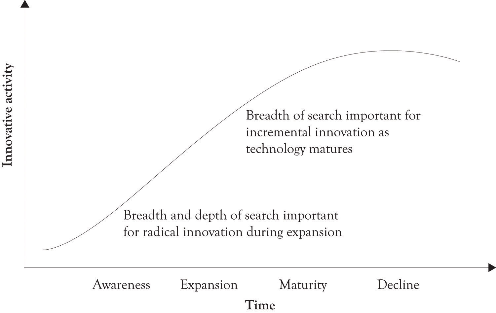
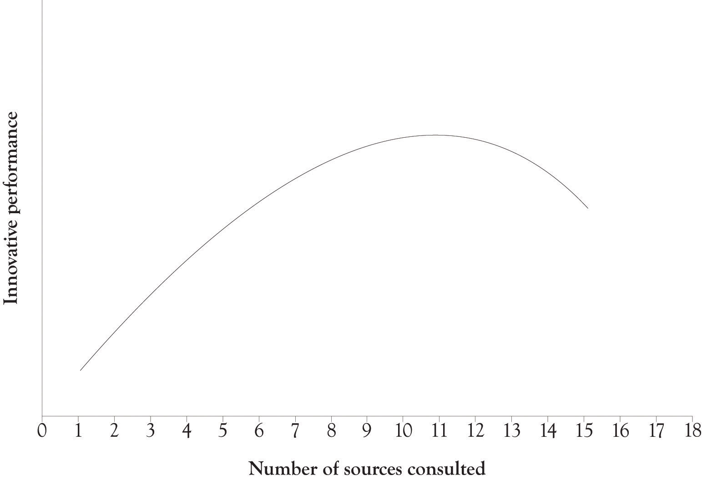

In addition to generating new knowledge, conducting R&D leads to smarter organizations because the knowledge these organizations already have helped understand new information when it becomes available. The best way to conduct R&D and to improve the organizational innovation and creativity is to learn-by-doing and to engage in search activity. In this section, we will discuss searching for ideas first and we will discuss learning-by-doing later.
Learning-aboutAcquiring knowledge and integrating and synthesizing that knowledge., or the search process, involves reading magazines, books, and technical articles, attending schools, observing the competition, one-on-one discussion, interacting with customers, and attending symposia and conferences. It involves acquiring knowledge and integrating and synthesizing that knowledge. This is the first step in developing individual and organizational knowledge structures. Learning-about in its basic form is search and synthesis. It is too expensive in terms of time and resources for organizations to build every product and service that is conceived. Many companies therefore learn-about an idea by reading, interacting with experts, and also by attending symposia and conferences related to an emerging technology. The goal is to gain insight and understand the potential of an emerging technology or a new idea.
It is our thesis that book learning, lectures, and even homework are usually beneficial. This is essentially the learning-about process. Search plays a key part in the learning-about process. This is particularly true when an organization searches outside the organization for ideas related to product innovation. Search can be classified in terms of the breadth and depth of the search.Laursen and Salter (2006). The breadth of the search refers to the number of outside sources used and consulted. The depth of search refers to the intensity of the relationship between the searcher and the external sources. Table 1.1 "External Sources of Information" lists potential sources of external information that can be used by entrepreneurs and product developers when engaging in an innovative activity.
As illustrated in Figure 1.9 "Breadth and Depth of Search and Innovative Activity" (adapted from Laursen and SalterLaursen and Salter (2006).), it appears that the breadth of search is important for incremental improvements innovation and that both breadth and depth of search are important for new and radical innovation. In terms of the breadth of the search, it appears that the sweet spot is about eleven sources plus or minus two sources (see Figure 1.10 "Breadth of Search and Innovative Performance", adapted from Laursen and SalterLaursen and Salter (2006).). This is a rather useful finding upon further reflection. When searching for new information, it is often difficult to determine how much information to gather and the number of sources for collecting information in order to avoid information overload. The point is that you have to seek out a variety of sources of information in order to improve the chances of introducing a successful innovation.
Table 1.1 External Sources of Information
| Sources of information from the market |
| Suppliers of equipment, materials, components, or software |
| Clients or customers |
| Competitors |
| Consultants |
| Commercial laboratories/R&D enterprises |
| Sources of information from institutions |
| Universities or other higher education institutes |
| Government research organizations |
| Other public sectors, e.g., business links and government offices |
| Private research institutes |
| Sources of information from the profession |
| Professional conferences and meetings |
| Trade associations |
| Technical/trade press and computer databases |
| Fairs and exhibitions |
| Sources from specialized places |
| Technical standards |
| Health and safety standards and regulations |
| Environmental standards and regulations |
Source: Laursen and Salter (2006).
Figure 1.9 Breadth and Depth of Search and Innovative Activity
Figure 1.10 Breadth of Search and Innovative Performance
